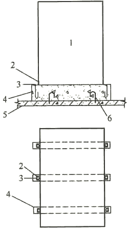
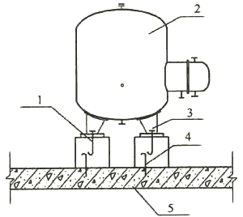
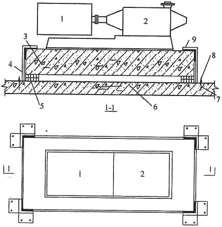

4 给水排水
4．1 室内给水排水
4．1．1 本条对多层、高层建筑及不同设防烈度的建筑的室内给水、排水用管材及其连接方式的选择分别作出了规定。除高层建筑及设防烈度为9度的建筑的给水、热水、污废水排水干管、立管的管材有特殊要求外，其他建筑的所有给水、排水用管材均按现行国家标准《建筑给水排水设计标准》GB 50015的要求选用。
高层建筑及9度地区建筑采用的排水管是适用于建筑排水柔性抗震接口铸铁管及管件，其产品标准为国家现行标准《建筑排水柔性接口承插式铸铁管及管件》CJ／T 178-2013。
4．1．2 本条的第1款、第4款、第5款、第6款规了给水、排水立管，穿越抗震缝、内墙、楼板、地下室外墙、基础的管段应采取相应的抗震措施，这些措施中的大部分内容在常规设计中也需采用。
第1款中抗震动措施可采用设波纹管伸缩节等方式。
第2款规定8度、9度的高层建筑给水系统不宜采用减压阀串联分区供水的方式，以免供水总立管故障时同时影响几个分区的供水。
第3款明确了给水、热水和消防管道设置抗震支承的条件及设置要求。对于要求设置防晃支架的高压消防管道，由于抗震支承与防晃支架功能类似，为了避免重复设置又保证使用安全，本款规定了在重复处可只设抗震支承。
第6款规定管道穿地下室外墙或基础处的室外部位宜设置波纹管伸缩节，是为防止地震时管道断裂。但埋地的波纹管伸缩节应加设套管保护或采用直埋地专用产品。
4．1．3 本条对室内给水排水设备、构筑物、设施的选型及抗震固定作了下列规定。
第1款规定金属、玻璃钢制品的生活、消防给水箱宜用圆形或方形水箱，这两种水箱应力分布较均匀，整体性好，即抗震性能较好。
第2款规定低位生活贮水池(箱)、消防水池、低区水泵房等设施、构筑物及设备间等宜布置在地下室或底层。即有地下室时宜布置在地下室，无地下室时宜布置在底层，这样，地震时，对其造成的破坏相对轻，次生灾害小，且易于修复。
第3款规定了高层建筑的中间水箱(池)、高位水箱(池)及机房应(或宜)靠建筑物中心布置。目的是地震时减少水箱等偏离中心造成的偏心力矩，减少水箱等的位移，以及减少因此造成的次生灾害。
第4款规定设备、设施、构筑物周围应有足够的检修空间，尤其是与其连接的进、出水管等部位应有一定的空间，以保证地震时连接管件等破坏能及时修复。
第5款规定给水水箱、水加热器等运行时不产生振动的设备、设施的基础底座或本体应与结构底板、楼板牢固固定，以防地震时倾斜、倾倒，做法参见图16、图17。

图16 给水水箱、水箱基础与楼板或底板连接示意
1-给水水箱；2-固定角钢；3-地脚螺栓；4-基础；5-底板或楼板；6-连接钢筋

图17 水加热器、基础与楼板或地板连接示意
1-地脚螺栓；2-水加热器；3-设备基础；4-连接钢筋；5-底板或楼板
第6款规定了设防烈度为8度、9度时，水泵等运行中有振动的设备应设防振基础及限位器固定，如图18所示。

图18 水泵限位器布置
1-电机；2-水泵；3-钢筋混凝土基座；4-限位器；5-橡胶隔振垫；6-楼(地)板；7-固定螺栓；8-底钢板(焊于角钢上)；9-顶钢板(焊于角钢上)